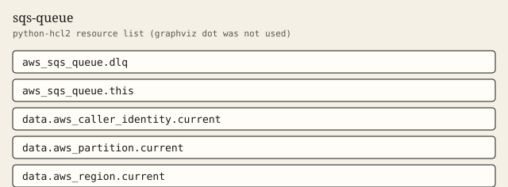

sqs-queue
Queue, dead-letter queue, redrive policy, and server-side encryption.
Tests passed 6 of 6. Failed 0.
Inputs
| Name | Type | Required | Description |
|---|---|---|---|
| dlq_message_retention_seconds | number | no | How long the dead-letter queue keeps a message, in seconds. |
| fifo | bool | no | Create a FIFO queue and a FIFO dead-letter queue. Both names then end in .fifo. |
| kms_key_arn | string | no | Customer managed key ARN or alias used when sse_mode is kms. Must be null for SQS-managed encryption. |
| max_receive_count | number | no | How many receives the main queue allows before the redrive policy sends the message to the dead-letter queue. |
| message_retention_seconds | number | no | How long the main queue keeps a message, in seconds. |
| name | string | yes | Queue name without a .fifo suffix. The module appends .fifo when fifo is true, including on the dead-letter queue. |
| sse_mode | string | no | Server-side encryption mode. sqs uses SQS-managed keys. kms requires kms_key_arn. |
| tags | map(string) | no | Extra tags merged onto every taggable resource. ManagedBy and Module are always set by the module. |
| visibility_timeout_seconds | number | no | Visibility timeout for the main queue, in seconds. |
Outputs
| Name | Description |
|---|---|
| caller_context | Account, partition, and region resolved from data sources. |
| dlq_arn | Dead-letter queue ARN. |
| dlq_fifo_queue | True when the dead-letter queue is FIFO. |
| dlq_name | Dead-letter queue name. Ends in .fifo when fifo is true. |
| dlq_url | Dead-letter queue URL. |
| fifo_queue | True when the main queue is FIFO. |
| max_receive_count | maxReceiveCount written into the main queue redrive policy. |
| queue_arn | Main queue ARN. |
| queue_name | Main queue name. Ends in .fifo when fifo is true. |
| queue_url | Main queue URL. |
| sqs_managed_sse_enabled | True when the queues use SQS-managed encryption. |
| sse_enabled | True when SQS-managed encryption is on, or a customer managed key is set. |
| tag_audit | Tags on every taggable resource this module creates. |
Example
The caller supplies the region. This example does not embed an account id.
module "orders" {
source = "../.."
name = "orders"
tags = {
Example = "basic"
}
}
Tests
- standard_redrive passed
- fifo_names passed
- kms_sse passed
- custom_receive_count passed
- reject_zero_receive_count passed
- reject_fifo_suffix passed
Mock plan excerpt
mocked provider: ARNs and IDs are simulated. This excerpt is from terraform test with a mocked provider, not a live plan.
mocked provider: ARNs and IDs are simulated. This is terraform test -verbose, not a live plan.
tests\sqs-queue.tftest.hcl... in progress
run "standard_redrive"... pass
Terraform used the selected providers to generate the following execution
plan. Resource actions are indicated with the following symbols:
+ create
Terraform will perform the following actions:
# aws_sqs_queue.dlq will be created
+ resource "aws_sqs_queue" "dlq" {
+ arn = (known after apply)
+ deduplication_scope = (known after apply)
+ fifo_queue = false
+ fifo_throughput_limit = (known after apply)
+ id = (known after apply)
+ kms_data_key_reuse_period_seconds = (known after apply)
+ message_retention_seconds = 1209600
+ name = "orders-dlq"
+ name_prefix = (known after apply)
+ policy = (known after apply)
+ redrive_allow_policy = (known after apply)
+ redrive_policy = (known after apply)
+ sqs_managed_sse_enabled = true
+ tags = {
+ "ManagedBy" = "terraform"
+ "Module" = "sqs-queue"
+ "Owner" = "platform"
}
+ tags_all = (known after apply)
+ url = (known after apply)
}
# aws_sqs_queue.this will be created
+ resource "aws_sqs_queue" "this" {
+ arn = (known after apply)
+ deduplication_scope = (known after apply)
+ fifo_queue = false
Resources
graphviz dot was not installed. The figure is a python-hcl2 resource list.

Changelog
Changelog
All notable changes to this module are documented in this file.
The format is based on Keep a Changelog, and this module uses Semantic Versioning.
[1.0.0] - 2026-10-03
Added
- Main queue, dead-letter queue, redrive policy, and server-side encryption.
Billable item names
Names only. This page does not quote a price. Example amounts, including a budget limit, are placeholders and are not recommendations. GuardDuty and Security Hub stay off unless a module switch is set, because those services are billable.
- Amazon SQS
- AWS Key Management Service